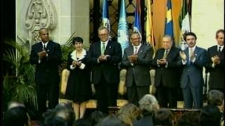

Los Acuerdos de Paz de 1996 marcaron el fin de 36 años de conflicto armado interno en Guatemala, uno de los conflictos más prolongados y devastadores de América Latina. Según la Comisión para el Esclarecimiento Histórico (1999), este conflicto dejó aproximadamente 200,000 víctimas, siendo el 83% de origen maya. El proceso de paz se desarrolló entre 1990 y 1996 bajo la mediación de las Naciones Unidas, culminando con la firma del Acuerdo de Paz Firme y Duradera el 29 de diciembre de 1996. Este proceso representó un esfuerzo histórico para transformar las estructuras del Estado y construir una sociedad más justa e inclusiva, reconociendo por primera vez el carácter multiétnico, pluricultural y multilingüe de la nación guatemalteca.
Contexto Histórico del Conflicto Armado Interno
El conflicto armado interno en Guatemala se caracterizó por profundas desigualdades estructurales y una violencia desproporcionada contra las comunidades indígenas. La Comisión para el Esclarecimiento Histórico (1999) documentó 669 masacres, principalmente en comunidades mayas, y determinó que el Estado fue responsable del 93% de las violaciones de derechos humanos. Jonas (2000) identifica que el conflicto pasó por tres fases principales: la fase inicial de confrontación (1960-1970), la escalada represiva (1970-1982) y el enfrentamiento generalizado con políticas de tierra arrasada (1982-1996). Esta última fase, particularmente durante el gobierno de Efraín Ríos Montt, fue catalogada por la CEH como actos de genocidio contra el pueblo maya ixil.
El Proceso de Negociación
El proceso de paz guatemalteco se distinguió por su carácter comprehensivo y la participación de múltiples actores nacionales e internacionales. Según Azpuru (1999), las negociaciones se desarrollaron a través de diez acuerdos sustantivos que abordaban las causas profundas del conflicto. La mediación de las Naciones Unidas, a cargo de Jean Arnault, y el apoyo del Grupo de Países Amigos (Colombia, México, Noruega, España, Estados Unidos y Venezuela) fueron cruciales para el avance del proceso. Los sucesivos gobiernos de Vinicio Cerezo, Jorge Serrano Elías, Ramiro de León Carpio y Álvaro Arzú representaron al Estado, mientras que la Unidad Revolucionaria Nacional Guatemalteca (URNG) agrupaba a las cuatro organizaciones insurgentes.
Los Doce Acuerdos Sustantivos
Los Acuerdos de Paz comprenden doce acuerdos sustantivos que buscan transformar las estructuras del Estado y la sociedad guatemalteca:
Acuerdo Marco sobre Democratización (1991)
Estableció el marco general para las negociaciones y los principios de democratización (Naciones Unidas, 1991).
Acuerdo Global sobre Derechos Humanos (1994)
Estableció compromisos para la protección de los derechos humanos y creó la Misión de Verificación de las Naciones Unidas en Guatemala (MINUGUA) (Naciones Unidas, 1994).
Acuerdo para el Reasentamiento de las Poblaciones Desarraigadas (1994)
Abordó la situación de aproximadamente 1.5 millones de desplazados internos y refugiados, garantizando su retorno voluntario y reasentamiento (Naciones Unidas, 1994).
Acuerdo sobre Identidad y Derechos de los Pueblos Indígenas (1995)
Reconoció oficialmente la identidad, derechos y cultura de los pueblos indígenas. Brett (2016) señala que este acuerdo representó un hito al reconocer el carácter multiétnico, pluricultural y multilingüe de Guatemala.
Acuerdo sobre Aspectos Socioeconómicos y Situación Agraria (1996)
Propuso reformas estructurales para abordar las desigualdades históricas, incluyendo reforma fiscal y políticas de desarrollo rural (Naciones Unidas, 1996a).
Acuerdo sobre Fortalecimiento del Poder Civil y Función del Ejército (1996)
Estableció la reducción del ejército y su subordinación al poder civil (Naciones Unidas, 1996b).
Acuerdo sobre Identidad y Derechos de los Pueblos Indígenas
Este acuerdo, firmado en 1995, representó un hito fundamental en el reconocimiento de los derechos de los pueblos originarios. Brett (2016) destaca que por primera vez el Estado guatemalteco reconoció oficialmente la identidad, cultura y derechos específicos de los pueblos maya, garífuna y xinka. El acuerdo estableció compromisos concretos para combatir la discriminación, promover la educación bilingüe intercultural, reconocer el derecho consuetudinario y garantizar la participación política indígena. Velásquez Nimatuj (2008) argumenta que este acuerdo sentó las bases para transformar el Estado monocultural en un Estado plurinacional, aunque su implementación ha enfrentado importantes resistencias estructurales. El acuerdo también reconoció la espiritualidad maya y los sitios sagrados, aspectos fundamentales para la cosmovisión indígena.
Aspectos Socioeconómicos y Situación Agraria
El Acuerdo sobre Aspectos Socioeconómicos y Situación Agraria (1996) abordó las profundas desigualdades que constituyeron una de las causas estructurales del conflicto. Según datos del Instituto Nacional de Estadística (2018), Guatemala mantiene uno de los niveles de desigualdad más altos de América Latina, con un coeficiente Gini de 0.48 para la distribución de ingreso y 0.84 para la distribución de tierra. El acuerdo propuso una reforma fiscal progresiva para incrementar la carga tributaria al 12% del PIB, así como políticas de desarrollo rural y acceso a tierra para campesinos e indígenas. Sin embargo, la Secretaría de la Paz (2019) reporta que estos compromisos han tenido una implementación limitada, manteniéndose la carga tributaria alrededor del 10% del PIB y persistiendo la concentración de la tierra en pocas manos.
Fortalecimiento del Poder Civil y Reforma del Ejército
El Acuerdo sobre Fortalecimiento del Poder Civil y Función del Ejército en una Sociedad Democrática (1996) buscó redefinir el papel de las fuerzas armadas en el nuevo contexto de paz. Este acuerdo estableció la reducción del ejército de 45,000 a 15,500 efectivos, la desmilitarización de la seguridad pública y la subordinación del ejército al poder civil. La Comisión Internacional contra la Impunidad en Guatemala (2015) documentó que, si bien se logró la reducción numérica, persisten desafíos en la reforma del sector seguridad y la desarticulación de estructuras paralelas de poder. El acuerdo también creó el marco para la desclasificación de archivos militares y el esclarecimiento histórico de las violaciones de derechos humanos durante el conflicto.
Impacto y Desafíos en la Implementación
La implementación de los Acuerdos de Paz ha sido un proceso complejo con avances significativos pero también importantes limitaciones. La Secretaría de la Paz (2019) identifica logros como la desmovilización de la URNG, la creación de instituciones como la Procuraduría de Derechos Humanos, y el reconocimiento constitucional de los pueblos indígenas. No obstante, organizaciones de la sociedad civil como la Coordinadora Nacional de Organizaciones Campesinas (2018) señalan que persisten desafíos críticos en materia de justicia, tierra y participación política. La tasa de impunidad supera el 90% según el Ministerio Público (2020), y la representación política indígena sigue siendo limitada, ocupando solo el 15% de los cargos de elección popular a pesar de constituir el 44% de la población (Tribunal Supremo Electoral, 2019).
Según informes de seguimiento, algunos de los principales logros y desafíos incluyen:
- Logros: Desmovilización de la URNG, creación de instituciones como la PDH, reconocimiento constitucional de los pueblos indígenas.
- Desafíos: Persistencia de la desigualdad, impunidad, falta de acceso a tierra para comunidades indígenas, limitada participación política de los pueblos originarios.
Legado y Vigencia en el Siglo XXI
A más de dos décadas de su firma, los Acuerdos de Paz mantienen plena vigencia como marco de referencia para el desarrollo democrático de Guatemala. Yagenova (2012) argumenta que los acuerdos constituyen una agenda pendiente de transformación estatal y social. El Instituto Centroamericano de Estudios para la Democracia Social (2021) destaca que los principios establecidos en los acuerdos siguen guiando las demandas sociales por justicia, equidad y reconocimiento de derechos. La lucha contra la impunidad, documentada por la CICIG entre 2007-2019, y los movimientos sociales por la defensa del territorio y los recursos naturales, encuentran en los acuerdos su fundamento normativo y legitimidad histórica. Los acuerdos continúan siendo la hoja de ruta para la construcción de un Estado verdaderamente democrático e inclusivo en Guatemala.
"Los Acuerdos de Paz nos dieron esperanza, pero la lucha por su plena implementación continúa. Son la hoja de ruta para una Guatemala verdaderamente democrática e inclusiva."Representante de organizaciones de la sociedad civil